<!doctype html>
<html>
<head>
<meta charset="UTF-8">
    <meta name="viewport" content="width=device-width, maximum-scale=1.0, minimum-scale=1.0, initial-scale=1.0" />
    <link rel="stylesheet" type="text/css" href="css/normalize.css">
    <link rel="stylesheet" type="text/css" href="css/avenir-font.css">
    <link rel="stylesheet" type="text/css" href="css/main.css">
    <link rel="stylesheet" type="text/css" href="css/overlay-style.css">
    <link rel="stylesheet" type="text/css" href="css/responsive-large.css">
    <link rel="stylesheet" type="text/css" media="only screen and (min-width:501px) and (max-width:959px)" href="css/responsive-medium.css">
    <script src="js/modernizr.custom.57782.js"></script>
    <!--[if lt IE 9]>
        <script src="dist/html5shiv.js"></script>
    <![endif]-->
<title>Daniel R. Huron | Graphic Designer</title>
</head>

<body>

    <header>
        <div class="logoContainer">
            
            <h1>Daniel R. Huron <span>Graphic Designer</span></h1>
        </div> <!-- End logoContainer -->
        <nav>
            <a href="#work">Work</a>
            <a href="#about">About</a>
            <a href="#contact">Contact</a>
            <a href="#"><button class="btn btn-2 btn-2h">Resume</button></a>
        </nav>
    </header> <!-- End Header-->
    
    <div class="wrapper">
        <div class="mainImage">
            <div class="headline">
                <h1>Thoughtful.</h1>
                <h1>Creative.</h1>
                <h1>Graphic Designer.</h1>
                <h1 class="callOut">Daniel R. Huron.</h1>
            </div> <!-- End headline -->
        </div><!-- End mainImage -->
        
        <div class="introduction">
            <p>My name is Daniel Huron. I’m an experienced communications leader in search of a    collaborative, creative environment that will challenge my design skills and allow me to sharpen my leadership abilities. I am a graphic designer with more than seven years experience designing and overseeing the production of brochures, magazines, catalogs, posters and a variety of other print projects. I have developed, shot and edited several promotional videos. I have experience overseeing and guiding graphic designers through the creative process and have managed projects from the initial concept all the way through to the delivery of the final printed product.</p>
        </div><!-- End Introduction -->
        
        <div id="work" class="work">
            <h2 class="sectionTitle">Work</h2>
            <div class="gallery">
                <div class="galleryItem overlay-container"> <!-- Palais Royal Project -->
                    <div> <!-- Contains photo -->
                        <a href="#" class="overlay-trigger">
                            
                        </a>
                    </div> <!-- End Photo Container Section -->
                    <div class="overlay overlay-hugeinc"> <!-- The Story Overlay Section -->
                        <button type="button" class="overlay-close">Close</button>
                        <section>
                        	<h2>Palais Royal:<span> Rebranding Project</span></h2>
                            <p><span>My Roles:</span> Creative Direction, Art Direction, Researcher and Graphic Designer</p>
                            <h3>The Challenge</h3>
                            <p>As part of the Media Design Master of Fine Arts Program at Full Sail University, I was assigned a year-long project to research, develop and execute a rebrand of an existing company or organization. After submitting two possible companies, the Full Sail faculty selected Palais Royal as my project’s focus.</p>
                            <figure>
                                <div class="videoWrapper">
	    	                        <iframe width="650" height="650" src="http://e.issuu.com/embed.html#7010112/4948116" frameborder="0" allowfullscreen style="background:#fff"></iframe>	
                                </div>
                                <figcaption>The Palais Royal Project Book and Style Guide summarizes my research and showcases the new brand guidelines.</figcaption>
                            </figure>
                            <h3>The Creative Process</h3>
                            <p>Palais Royal is a department store that has been in business for more than 90 years. It’s located in Houston, Texas, and is today part of Stage Stores, Inc. Stage Stores specializes in operating department stores in small to medium sized towns where residents don’t have easy access to competitors who sell similar brands of clothing, jewelry or home decor. In fact, Stage Stores’ competitors are located an average of 30 miles away.</p>
                            <p>Palais Royal serves a different type of customer, however. The vast majority of Palais Royal locations are located within the Greater Houston area. Instead of 30 miles away, it’s competitors are sometimes a 30 second walk away. The retail market is very competitive and dense. To survive and thrive in this environment Palais Royal needed a brand which showcased the quality of the brands it sells while also communicating the opportunities for savings that so many shoppers crave.</p>
                            <p>The development of the new Palais Royal brand began by researching the history of the department store and department stores in general. I also studied the competition to get a feel of how each of them used photographs, color and typography. I didn’t limit myself to just Palais Royal’s direct competition (JC Penny and Kohl’s). I also studied higher end stores like Saks Fifth Avenue to learn how they showcased their brand.</p>
                            <p>The most important part of the development was learning about the shoppers. Palais Royal’s key demographic is women with families. These are people who want to get the best possible items for their children and themselves and know they’re going to have enough money left over to pay the electric bill. I browsed through consumer research and learned that customers are very interested in sales and coupons. They want to feel like they’re getting a good deal. I knew that whatever direction I went, coupons and sales signs would be an important part of the finished product.</p>
                            <p>I developed three moodboards that represented three different directions to take the Palais Royal brand. The first theme focused on family, the next on style and final board on the joy of shopping. After completing this step, I began to develop logo concepts. Finally, I developed dynamic mood boards, which put sound and movement to each of these concepts.</p>
                            <figure>
                                
                                <figcaption>Palais Royal Moodboard #1: Family</figcaption>
                            </figure>
                            <figure>
                                
                                <figcaption>Palais Royal Moodboard #2: Style</figcaption>
                            </figure>
                            <figure>
                                
                                <figcaption>Palais Royal Moodboard #3: The Joy of Shopping</figcaption>
                            </figure>
                            <figure>
                                
                                <figcaption>Palais Royal Logo Concepts</figcaption>
                            </figure>
                            <figure>
                                <div class="videoWrapper">
                            	    <iframe width="560" height="315" src="http://www.youtube.com/embed/x3yQ8wO-zUg" frameborder="0" allowfullscreen></iframe>
                                </div>
                                <figcaption>Dynamic Moodboard #1: Family</figcaption>
                            </figure>
                            <figure>
                                <div class="videoWrapper">
                            	    <iframe width="560" height="315" src="http://www.youtube.com/embed/TxHA0tVtoqQ" frameborder="0" allowfullscreen></iframe>
                                </div>
                                <figcaption>Dynamic Moodboard #2: Style</figcaption>
                            </figure>
                            <figure>
                                <div class="videoWrapper">
                            	    <iframe width="560" height="315" src="http://www.youtube.com/embed/RQYMQZhjIKo?rel=0" frameborder="0" allowfullscreen></iframe>
                                </div>
                                <figcaption>Dynamic Moodboard #3: The Joy of Shopping</figcaption>
                            </figure>
                            <p>With my research complete and three viable options at my disposal, I discussed which possible direction to pursue for the new Palais Royal brand. It was decided that the third theme (The Joy of Shopping) was the best direction to go because of how it related to the needs of my key demographic.</p>
                            <h3>The Results</h3>
                            <p>After deciding on a design direction, I began tweaking and refining my logo. It needed more femininity and motion. The final bag design is intended to look like a shopping bag being swung back and forth by a customer pleased with their latest purchase.</p>
                            <figure>
                                
                                <figcaption>The new Palais Royal logo.</figcaption>
                            <p>The following is a selection of sample collateral I developed for this project:</p>
                            </figure>
                            <figure>
                                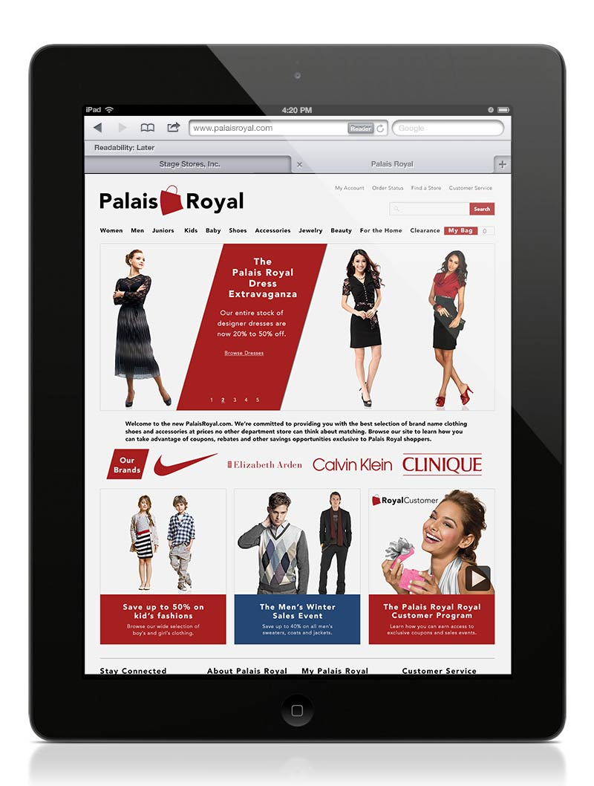
                                <figcaption>Palais Royal homepage mockup as seen on an iPad.</figcaption>
                            </figure>
                            <figure>
                                
                                <figcaption>Palais Royal product page mockup as seen on a desktop computer.</figcaption>
                            </figure>
                            <figure>
                                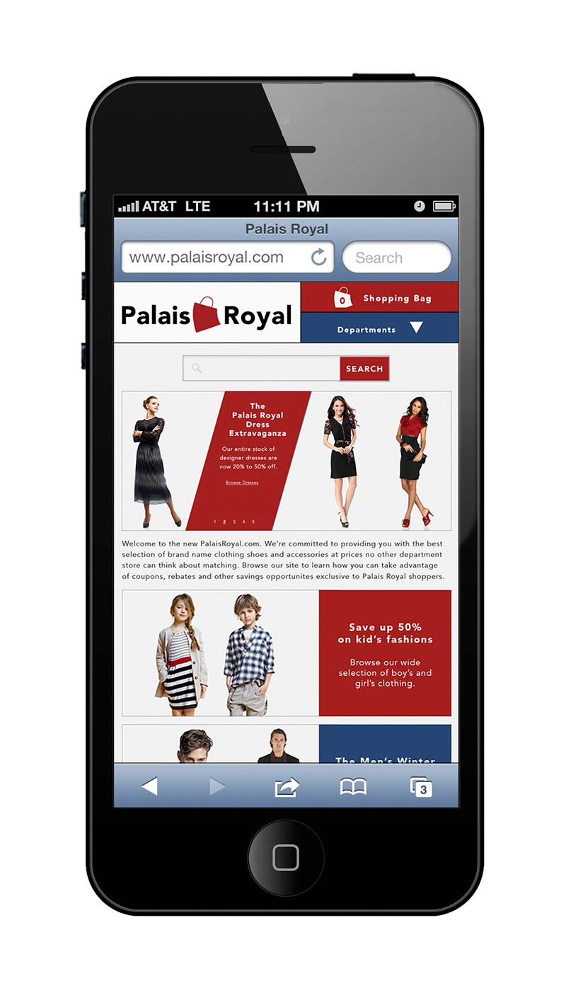
                                <figcaption>Palais Royal homepage mockup as seen on an iPhone.</figcaption>
                            </figure>
                            <figure>
                                
                                <figcaption>Palais Royal Brand Book Cover.</figcaption>
                            </figure>
                            <figure>
                                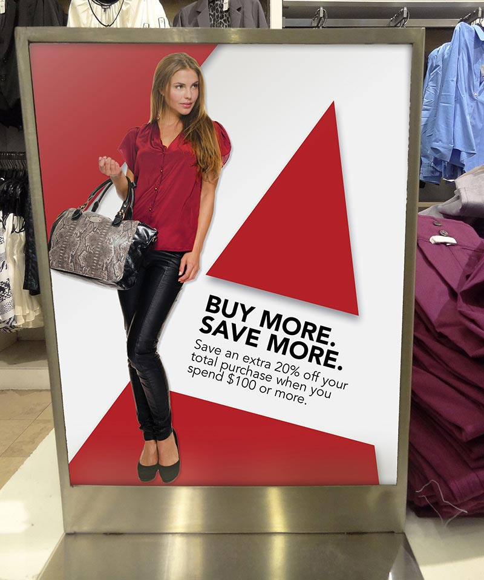
                                <figcaption>Palais Royal in-store sign mockup.</figcaption>
                            </figure>
                            <figure>
                                
                                <figcaption>Palais Royal kiosk mockup.</figcaption>
                            </figure>
                            <figure>
                                
                                <figcaption>Palais Royal weekly sales catalog mockup.</figcaption>
                            </figure>
                            <figure>
                                
                                <figcaption>Palais Royal credit card mockup.</figcaption>
                            </figure>
                            <p>The following video is a summary of my research and design process:</p>
                                <div class="videoWrapper">
                            		<iframe width="560" height="315" src="http://www.youtube.com/embed/2q7_iWBMtCU?rel=0" frameborder="0" allowfullscreen></iframe>
                                </div>
                        </section>
                    </div> <!-- End Story Overlay Section -->
                </div> <!-- End Palais Royal Project -->
                <div class="galleryItem overlay-container"> <!-- Coleman Pathways -->
                    <div> <!-- Contains photo -->
                        <a href="#" class="overlay-trigger">
                            
                        </a>
                    </div> <!-- End Photo Container Section -->
                    <div class="overlay overlay-hugeinc"> <!-- The Story Overlay Section -->
                        <button type="button" class="overlay-close">Close</button>
                        <section>
                        	<h2>Coleman Pathways:<span> Student Services Handout</span></h2>
                            <p><span>My Roles:</span> Creative Direction, Art Direction and Graphic Designer</p>
                            <h3>The Challenge</h3>
                            <p>Many of our students come to HCC Coleman wanting to study nursing. Unfortunately, many of them will not qualify for the program. They either don’t have the grades, don’t have the skill sets or are unaware of the various other healthcare career options. To help educate students about these options and to show how students could progress through their education towards their ultimate goal, the Public Relations office developed the HCC Coleman Pathways handout.</p>
                            <figure>
                                
                                
                                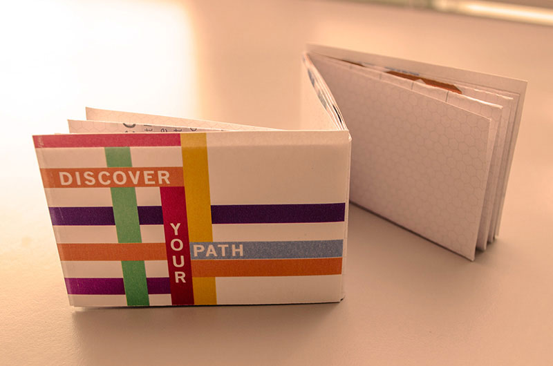
                               <figcaption>The Coleman Pathways Foldout Card</figcaption>
                            </figure>
                            <h3>The Creative Process</h3>
                            <p>As with all the projects I undertake at HCC Coleman, accuracy is of the utmost importance. Before sketching, before opening Illustrator, I created a flow chart outlining how each of our programs could flow into the other. I passed the chart by our academic advisors to ensure the accuracy of the information and made edits where necessary.</p>
                            <figure>
                                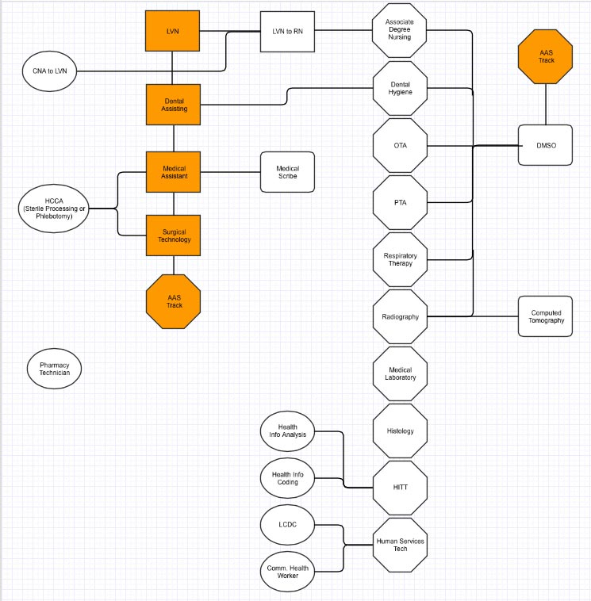
                               <figcaption>The original flow chart.</figcaption>
                            </figure>
                            <p>From the moment that this project was brought to me, my idea was to create a business-card sized folding handout. It was my goal to create something that many of our students hadn’t seen before. Every student had seen a brochure. More importantly, every student had at one time or another lost or thrown away a brochure someone had handed to them. It was my belief that this handout would be much more special and therefore much less likely to be trashed or forgotten.</p>
                            <p>The toughest part of this project was ensuring I could get all the information on the page without cluttering the design and keeping the fonts in a reasonable size. I worked within a very strict grid to ensure each portion of the design was a similar size and flowed naturally between each level. I added a shadow to each connection point to help show how each new degree was a step up on the career ladder.</p>
                            <figure>
                                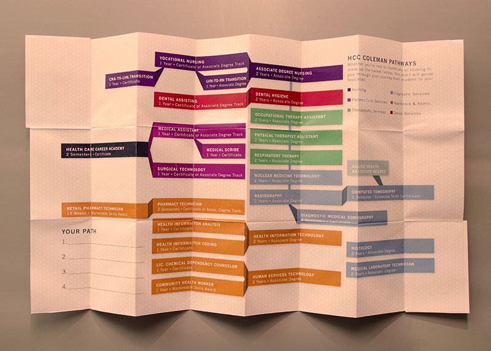
                                
                                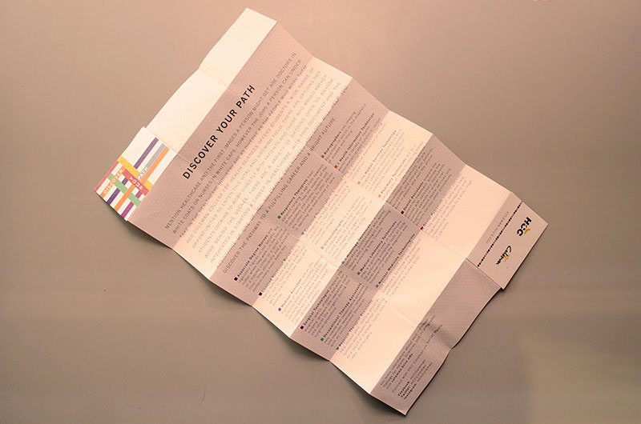
                                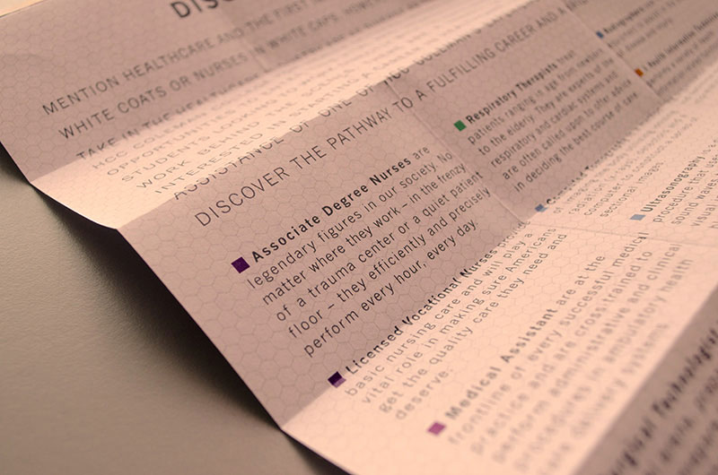
                               <figcaption>The Coleman Pathways Foldout Card</figcaption>
                            </figure>
                            <h3>The Results</h3>
                            <p>The Public Relations Director and President of our college were both very excited about the progress of this project. They were happy with the unique way in which the information was presented and how easily all the elements connected together. Student Service advisors I showed the concept to were impressed and spoke excitedly about how they might be able to use it with potential students.</p>
                            <p>However, because of changes in our administration this project was shelved. It’s part of the job. These things happen, but I couldn’t help but be a little disappointed because I could see the potential for this project to become very useful to our student services staff and potential students.</p>
                        </section>
                    </div> <!-- End Story Overlay Section -->
                </div> <!-- End Coleman Pathways -->                
                <div class="galleryItem overlay-container"> <!-- One Day Video -->
                    <div> <!-- Contains photo -->
                        <a href="#" class="overlay-trigger">
                            
                        </a>
                    </div> <!-- End Photo Container Section -->
                    <div class="overlay overlay-hugeinc"> <!-- The Story Overlay Section -->
                        <button type="button" class="overlay-close">Close</button>
                        <section>
                        	<h2>One Day:<span> Promotional Video</span></h2>
                            <p><span>My Roles:</span> Concept Development, Camera Operator and Editor</p>
                            <h3>The Challenge</h3>
                            <p>HCC Coleman College’s faculty and staff had produced several videos which showcased the college’s students and programs. However, these videos were all very straight forward, lacked narrative momentum and looked amateurish. It was my goal to develop a video that showcased our location within the Texas Medical Center, our campus (especially the laboratories) and honored the dedication and sacrifice of our students.</p>
                            <div class="videoWrapper">
                                <iframe width="560" height="315" src="http://www.youtube.com/embed/RdKruZoGff8?rel=0" frameborder="0" allowfullscreen></iframe>
                            </div>                            
                            <h3>The Creative Process</h3>
                            <p>I developed the concept for “One Day” after watching the video for Death Cab for Cutie’s <a href="https://www.youtube.com/watch?v=pq-yP7mb8UE" target="_blank">“I Will Possess Your Heart.”</a> Intercut between shots of the band performing the song are scenes of a woman traveling around the world. I was struck by the simplicity of the concept and how it allowed the viewer to enter the main character’s thoughts. I decided to expand on this idea for this project.</p>
							<p>After winning buy-in from the Public Relations Director, I approached several program directors to ask for their help recruiting students to appear in the video and to ask permission to film in their labs. I built a camera rig from metal pluming pipes in order to accomplish the flowing camera moves I pictured in my head. I got permission to shoot the skyline images of our campus from the UT Brown Foundation Institute of Molecular Medicine.</p>
							<p>A student and I arrived on campus early one morning to shoot scenes on METRORail. We were worried the entire time, because we didn’t know if what we were doing was OK or not. Her dedication and cooperation is just one example of the generous spirit the student volunteers brought to this project.</p>
							<p>After filming off and on for about a month, I began editing the footage in Final Cut Pro.
</p>
                            <h3>The Results</h3>
                            <p>The video premiered during our annual Employee Recognition Luncheon and received a standing ovation. The video has been viewed on YouTube more than 5,000 times. It has served as an inspiration for other videos produced by Houston Community College, and has been shown at several recruiting events throughout the years.</p>
							<p>"One Day” was awarded a 2009 Silver Medallion Award in the promotional video category from the National Council for Marketing and Public Relations (NCMPR).</p>
                        </section>
                    </div> <!-- End Story Overlay Section -->
                </div> <!-- End One Day Video -->
                <div class="galleryItem overlay-container"> <!-- The Book -->
                    <div> <!-- Contains photo -->
                        <a href="#" class="overlay-trigger">
                            
                        </a>
                    </div> <!-- End Photo Container Section -->
                    <div class="overlay overlay-hugeinc"> <!-- The Story Overlay Section -->
                        <button type="button" class="overlay-close">Close</button>
                        <section>
                        	<h2>The Book:<span> Academic Catalog</span></h2>
                            <p><span>My Roles:</span> Creative Direction, Art Direction, Writer, Editor, Photographer and Graphic Designer</p>
                            <h3>The Challenge</h3>
                            <p>While most of Houston Community College’s programs are open enrollment, HCC Coleman College for Health Sciences is not. Students must fulfill program prerequisites, submit applications, sit down for interviews - in other words, they must earn their spot. The goal of this project was to create an engaging publication that clearly explained HCC Coleman’s programs and the admission process.</p>     
                            <figure>
                                
                                
                                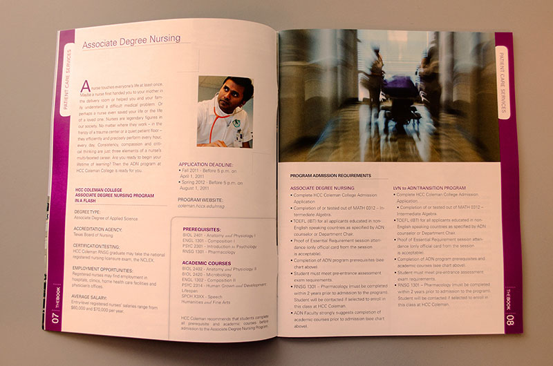
                                
                               <figcaption>The Book - Version 1.</figcaption>
                            </figure>
                            <h3>The Creative Process</h3>
                            <p>Over the last four years, the HCC Coleman Public Relations department has produced three versions of The Book. Each version began with the same goal: The information had to be up-to-date and accurate. To ensure this, I gathered information from various sources (admission step flyers, our website, previous versions of The Book) and outlined the most necessary items that a potential student would need to know. I submitted this information to each of our programs and our academic advisors to get their approval.</p>
                            <p>One of the best things about working on a project on a semi-regular basis is that you have an opportunity to learn and evolve. For instance, the first edition of The Book featured a two-page spread for each of the programs. While the spreads looked good on paper, it also seemed as if we were bombarding the reader with a lot of unnecessary information. This plus the fact that the budget for each subsequent version became tighter and tighter forced us to cut the number of overall pages and reconfigure the layout. We asked ourselves what is the most important information that a potential student would need and cut everything else out.</p>  
                            <figure>
                                
                                
                                
                                
                               <figcaption>The Book - Version 2.</figcaption>
                            </figure>
                            <p>The first version of The Book featured a fairly simple cover design, but we wanted the next version to have more personality. My graphic designer and I roamed our campus’ labs taking pictures of equipment searching for an image that would inspire the reader. We finally settled on an image of a muscular anatomy model sticking a triumphant, athletic pose. We felt that the image showcased exactly what our college was about and the pose would inspire the reader to achieve their dreams. We did have to convince our college’s president to agree was an issue, however. She feared that the image would turn off potential students. Our argument was simple: The image wasn’t grisly or profane. Plus, if a potential health science student is turned off by a model of the human body, they’re probably not fit for this type of work.</p>
                            <figure>
                                
                                
                                
                                
                               <figcaption>The Book - Version 3.</figcaption>
                            </figure>
                            <h3>The Results</h3>
                            <p>The reception to each version of The Book has been overwhelmingly positive from students, faculty and staff. What I’m most proud of is three years after the publication of the first version I still see students carrying around their copy of The Book. Knowing that my work is helping them navigate admissions and the pursuit of their dream fills me with a lot pride.</p>
                            <p>The HCC Coleman Public Relations Department was awarded a 2012 Gold Paragon award in Academic Catalog design from the National Council for Marketing and Public Relations (NCMPR) for our work on version two of The Book.</p>
                        </section>
                    </div> <!-- End Story Overlay Section -->
                </div> <!-- End The Book -->
                <div class="galleryItem overlay-container"> <!-- Coleman Ad -->
                    <div> <!-- Contains photo -->
                        <a href="#" class="overlay-trigger">
                            
                        </a>
                    </div> <!-- End Photo Container Section -->
                    <div class="overlay overlay-hugeinc"> <!-- The Story Overlay Section -->
                        <button type="button" class="overlay-close">Close</button>
                        <section>
                        	<h2>HCC Coleman Outsmart Campaign:<span> Advertising Campaign</span></h2>
                            <p><span>My Roles:</span> Creative Direction, Art Direction, Photographer and Copywriter</p>
                            <h3>The Challenge</h3>
                            <p>One of the earliest lessons that HCC Coleman students learn is that completing their chosen program is not going to be easy. To succeed they won’t only have to spend a lot of time in the classroom or laboratory refining their skills, they’re going to have to sacrifice their free time as well. They’ll have to spend time in labs during their days off. They’ll have to miss time with friends and family to study for tests. To become the best they can possibly be, they’ll have to dedicate themselves to their studies. The goal of this ad campaign was to pay tribute to that sacrifice and connect with potential students who were willing to give 100 percent of their effort towards their future.</p>
                            <figure>
                                
                                
                               <figcaption>HCC Coleman Outsmart Magazine Campaign.</figcaption>
                            </figure>
                            <h3>The Creative Process</h3>
                            <p>Figuring out exactly how to honor our students’ sacrifices was the first question the Public Relations team had to answer. We began discussing what our students had in common and what we as former students had to do to get through school. We talked about all of the bad jobs we worked just to have enough money to survive while we went to college. We talked about working in restaurants, in bars and in retail stores. It was work we did as a means to an end. We were a bartender only temporarily. This is the path we decided to take. Our students are working today for what they will be tomorrow.</p>
                            <p>The next step was finding locations and volunteers for our location shoots. I was very lucky to have enough connections with vendors and former employees to find people wiling to volunteer as models. I approached the owner of a restaurant near our campus who allowed us to shoot the photos in his dining room. We used the cafe located on our campus for the other photo shoot.</p>
                            <p>After I took the photographs and wrote the copy, I handed them over to our graphic designer. She developed several concepts. We decided on the concept seen here because It made our student the star. Placing him in color with a black and white background removed all distractions and let the viewer place himself into the shoes of the story’s main character.</p>
                            <h3>The Results</h3>
                            <p>Both advertisements ran several times during 2014. We placed a special link in the ad that let us measure the number of readers who visited www.colemanconnection.org after viewing the ad. Following the publication of a new edition of Outsmart Magazine we could expect a surge in visitors for the next week or so.</p>
                        </section>
                    </div> <!-- End Story Overlay Section -->
                </div> <!-- End Coleman Ad -->
                <div class="galleryItem overlay-container"> <!-- This is Coleman Video -->
                    <div> <!-- Contains photo -->
                        <a href="#" class="overlay-trigger">
                            
                        </a>
                    </div> <!-- End Photo Container Section -->
                    <div class="overlay overlay-hugeinc"> <!-- The Story Overlay Section -->
                        <button type="button" class="overlay-close">Close</button>
                        <section>
                        	<h2>This is Coleman:<span> Promotional Video</span></h2>
                            <p><span>My Roles:</span> Concept Development, Camera Operator and Editor</p>
                            <h3>The Challenge</h3>
                            <p>The goal of this project was to create a video in which students talk directly to potential students. We could produce tons advertisements, posters and brochures that state why HCC Coleman College is the best choice for those seeking to earn a health science degree, but nothing would have as much impact as hearing it from people who have first-hand experience.</p>
                            <div class="videoWrapper">
                                <iframe width="560" height="315" src="http://www.youtube.com/embed/-P1QGXJzH8Q" frameborder="0" allowfullscreen></iframe>
                            </div>                            
                            <h3>The Creative Process</h3>
                            <p>After developing the concept, I began casting the video. I needed a diverse cast of students from a variety of programs that reflected our student population. I contacted several programs to ask for their help in suggesting students, but I also tasked a member of the Public Relations team to walk around campus and talk to students who might be good candidates for this project. After gathering all this information from the programs and my coworker, I narrowed the cast down to six students.</p>
                            <p>I developed a list of questions that I would ask each of the students. I also began to sketch out different angles for each interview setup. I wanted each interview to have a unique look and feel. I wanted to show off our campus while not distracted the viewer from what’s important - the person doing the talking.</p>
                            <p>Over the course of one week, I interviewed each of the students. Each interview took about an hour to do. This wasn’t due to the fact that the students had issues with being on camera. No, it was because I wanted to have as much visual variety as possible. I didn’t just want to set the camera up and let people talk. To me, that would result in a visually stagnate final product. I wanted to be able to move between wide, medium and closeup shots with freedom. So I did three set ups per interview. I felt bad making each student say the same things over and over again, but in the end this commitment to creating as much footage as possible created a much better finished product.</p>
                            <p>After shooting, I assembled a rough edit. Every shot fit into place, but it felt like it was lacking something special. It was jarring to go from a black screen right into the interview. I browsed my footage and found an image of one of the students laughing nervously. I loved it. I placed it at the beginning and felt that it humanized the piece. It sets the viewer at ease, earns their trust. It tells the viewer that these people are real and they can be trusted.</p>
                            <h3>The Results</h3>
                            <p>“This is Coleman” has become one of the most endearing projects I’ve worked on at HCC Coleman. It’s regularly shown at student recruitment events. It’s been viewed more than 1,700 times on YouTube. When our department receives requests to produce videos, more often than not, our clients ask us to use this video as a jumping off point.</p>
                            <p>“This is Coleman” was awarded a 2010 Bronze Medallion Award by the National Council for Marketing and Public Relations (NCMPR) in the promotional video category.</p>
                        </section>
                    </div> <!-- End Story Overlay Section -->
                </div> <!-- End This is Coleman Video -->
                <div class="galleryItem overlay-container"> <!-- Coleman Magazine -->
                    <div> <!-- Contains photo -->
                        <a href="#" class="overlay-trigger">
                            
                        </a>
                    </div> <!-- End Photo Container Section -->
                    <div class="overlay overlay-hugeinc"> <!-- The Story Overlay Section -->
                        <button type="button" class="overlay-close">Close</button>
                        <section>
                        	<h2>Coleman Magazine:<span> College Publication</span></h2>
                            <p><span>My Roles:</span> Creative Direction, Art Direction, Writer, Editor, Photographer and Designer</p>
                            <h3>The Challenge</h3>
                            <p>When I first started working at HCC Coleman, the Public Relations Director had been publishing a two-page newsletter and distributing it to the campus’ faculty and staff. Though it was a simple newsletter, it got the job done. However, I had bigger ideas. We began discussing the possibility of expanding the newsletter into a magazine, which would include not only news on the latest happenings on campus but also feature our students, faculty and staff.</p>
                            <figure>
                                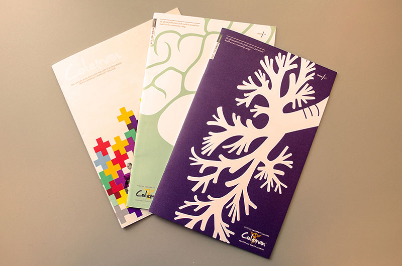
                               <figcaption>Coleman Magazine.</figcaption>
                            </figure>
                            <h3>The Creative Process</h3>
                            <p>Each issue of Coleman Magazine began with a department meeting. Each member of the Public Relations team would bring story ideas to the table, and it was our job to sort out the best ideas while ensuring that there was equal representation of HCC Coleman’s students, faculty and staff.</p>
                            <p>After we decided on what stories to pursue, it was my job to track all of the elements through the creative process. If there were stories to be written or photographs to be taken, I would write those stories and take those photos. If other members of our staff were assigned stories, it was my job to make sure the copy was turned in on time. I organized the layout of the magazine to ensure we had enough material to fill 16 to 20 pages.</p>
                            <figure>
                                
                                
                                
                                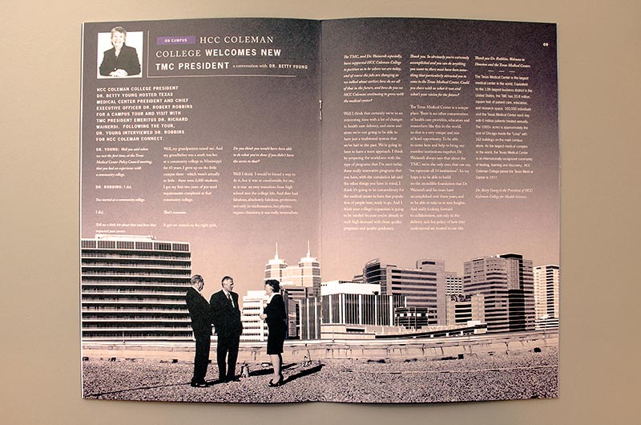
                                
                               <figcaption>Coleman Magazine - Issue 11.</figcaption>
                            </figure>
                            <p>During the magazine’s early days, I would layout the elements myself. I would develop cover concepts and make them a reality. After we hired a staff graphic designer, however, I began to take on more of an art director’s role. Our designer and I would discuss concepts and themes for each issue, she would develop ideas and we’d work together to decide which design ideas to pursue. When she hit a creative wall, we would discuss options and attempt to solve any issues she was facing.</p>
                            <p>I was also very involved in the printing process. I ensured that the files were ready to print before sending them to our printer. I kept track of the project as it progressed through the printing process.</p>
                            <figure>
                                
                                
                                
                                
                               <figcaption>Coleman Magazine - Issue 10.</figcaption>
                            </figure>
                            <h3>The Results</h3>
                            <p>The publication of each issue of Coleman Magazine was an event. Copies were sent to HCC Coleman and Houston Community College shareholders throughout the Houston-area. Issues were placed throughout the campus and were gone within two weeks. VIPs who visited our campus were almost certain to leave with their very own copy of the magazine.</p>
                            <p>The HCC Coleman Public Relations Department was awarded a 2012 Silver Paragon award in magazine design from the National Council for Marketing and Public Relations (NCMPR). The department also earned a NCMPR Gold Medallion Award in 2012 and a Silver Medallion Award in 2010 for magazine design.</p>
                            <figure>
                                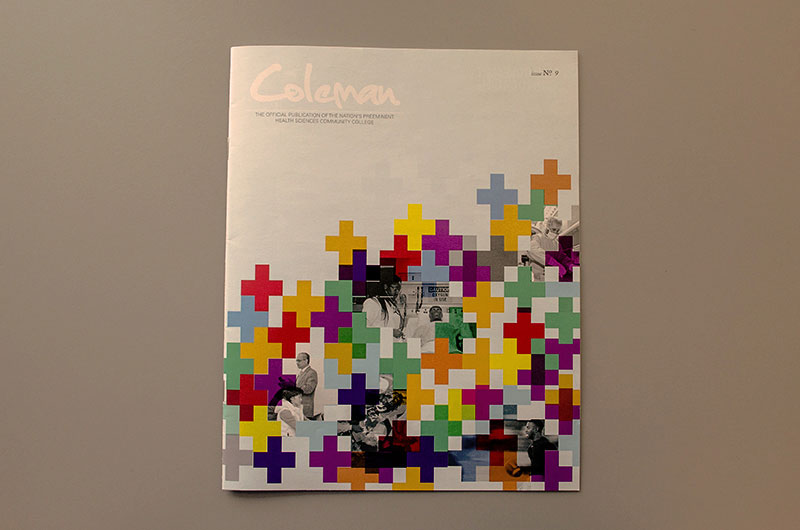
                                
                                
                               <figcaption>Coleman Magazine - Issue 9.</figcaption>
                            </figure>
                            <figure>
                                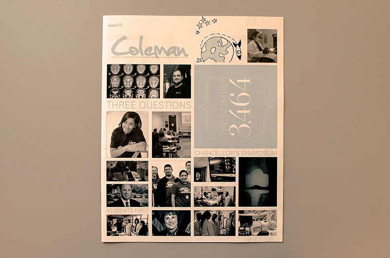
                                
                                
                               <figcaption>Coleman Magazine - Issue 8.</figcaption>
                            </figure>
                        </section>
                    </div> <!-- End Story Overlay Section -->
                </div> <!-- End Coleman Magazine -->
                <div class="galleryItem overlay-container"> <!-- Coleman Display Project -->
                    <div> <!-- Contains photo -->
                        <a href="#" class="overlay-trigger">
                            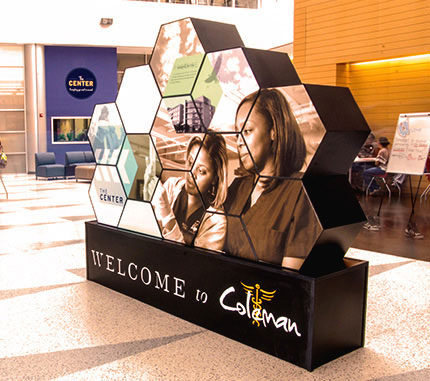
                        </a>
                    </div> <!-- End Photo Container Section -->
                    <div class="overlay overlay-hugeinc"> <!-- The Story Overlay Section -->
                        <button type="button" class="overlay-close">Close</button>
                        <section>
                        	<h2>Wayfinding Monument and Signs:<span> Environmental Design</span></h2>
                            <p><span>My Roles:</span> Art Direction, Creative Direction, Photographer and Graphic Designer</p>
                            <h3>The Challenge</h3>
                            <p>The demolition of the Welcome Center at HCC Coleman College for Health Sciences created much more seating space for students on the first floor but also removed friendly faces for visitors to interact with as they first entered the building. The college campus needed a simple way to interact with its students (both current and potential) and also inform them of the school’s history and alumni.</p>
                            <figure>
                                
                               <figcaption>Coleman Wayfinding Monument Front</figcaption>
                            </figure>
                            <figure>
                                
                               <figcaption>Coleman Wayfinding Monument Back</figcaption>
                            </figure>
                            <h3>The Creative Process</h3>
                            <p>Our graphic designer and I had one goal in mind when we began this project: We wanted to create something that would “wow!” campus visitors. We didn’t want a simple sign. We wanted to create a piece that was easily updatable, that provided more than just wayfinding information and that could be easily moved if the need to do so arrived.</p>     
                            <p>We researched wayfinding monuments and were fascinated by modular designs. We had been utilizing hexagon shapes in our designs for several months, and wondered if this shape would be right for this project. Early on in the design process we contacted Seebridge Media and asked for their input on exactly what shapes we could build and how we could assemble the final piece. Seebridge were excited about the possibilities of this project and became an important partner in this project. They assembled a proof of concept for us and confirmed that, yes, a hexagonal design would work.</p>
                            <p>Designing this monument took time. We went through several drafts and photographs. Adding to the difficult nature of this project was our decision to have elements from one block bleed into another.
It was my job to keep the project moving forward. Our graphic designer worked hard on this project over several months while still having to contend with additional projects that needed to be completed. I reported back to our Public Relations Director to ensure him things were moving in the right direction. I worked closely with our College Operations Officer to approve the final size of the piece and make sure that the final display was safe and up to code.</p>
                            <figure>
                                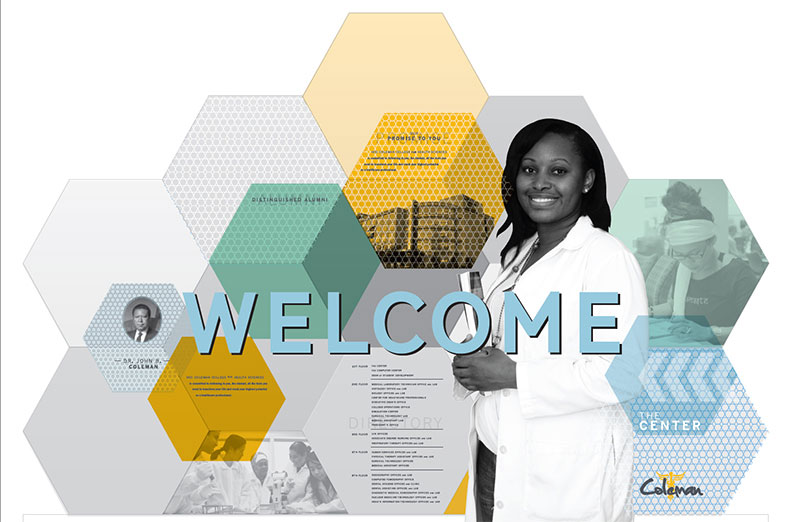
                                
                               <figcaption>Early Coleman Wayfinding Monument design concepts.</figcaption>
                            </figure>
                            <figure>
                                
                               <figcaption>Final design concept for the front of the Coleman Wayfinding Monument.</figcaption>
                            </figure>
                            <figure>
                                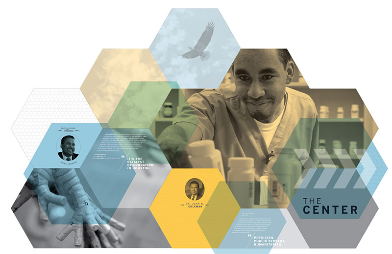
                               <figcaption>Final design concept for the back of the Coleman Wayfinding Monument.</figcaption>
                            </figure>
                            <p>Our work didn’t end after we turned the file in to Seebridge for printing and assembly. Cutting each of the hexagon shapes and ensuring that each piece fit in with the next was a headache. We had to go back several times to edit and resize our designs to ensure the best possible fit. It was a stressful time. By the time the final piece was delivered, we were exhausted and ready for the project to come to an end. However, seeing all of our hard work pay off with a unique, functional and well-designed piece made all of realize the work was all worth it.</p>
                            <figure>
                                
                               <figcaption>Coleman Wayfinding Monument in the Seebridge Media warehouse.</figcaption>
                            </figure>
                            <p>In addition to the wayfinding monument, we also designed a map for each floor of the building. Our graphic designer and I worked closely in developing the concept. With a concept in place, I assembled all of the information and passed it on to her. The final designs were printed on a PVC material and mounted to the old wayfinding boards on each floor. This simple solution prevented us from having to remove the existing boards and gave our final piece a more professional look.</p>
                            <figure>
                                
                                
                                
                               <figcaption>Coleman Wayfinding signs.</figcaption>
                            </figure>
                            <h3>The Results</h3>
                            <p>The HCC Coleman Public Relations Department was awarded a 2013 Bronze Paragon award in display signage from the National Council for Marketing and Public Relations (NCMPR). The department also earned a 2013 NCMPR Gold Medallion Award.</p>
                        </section>
                    </div> <!-- End Story Overlay Section -->
                </div> <!-- End Coleman Display Project -->
                <div class="galleryItem overlay-container"> <!-- Why Attend Coleman Video -->
                    <div> <!-- Contains photo -->
                        <a href="#" class="overlay-trigger">
                            
                        </a>
                    </div> <!-- End Photo Container Section -->
                    <div class="overlay overlay-hugeinc"> <!-- The Story Overlay Section -->
                        <button type="button" class="overlay-close">Close</button>
                        <section>
                        	<h2>Why Attend Coleman?:<span> Promotional Video</span></h2>
                            <p><span>My Roles:</span> Concept Development, Camera Operator and Editor</p>
                            <h3>The Challenge</h3>
                            <p>The new Houston Community College Chancellor asked each of the system’s five college presidents to produce a video explaining why they believed students should attend their school. HCC Coleman College’s president asked me to produce this video and to use the format my previous video “This is Coleman” as a jumping off point.</p>
                            <div class="videoWrapper">
                                <iframe width="560" height="315" src="http://www.youtube.com/embed/Hazr6EfejMc" frameborder="0" allowfullscreen></iframe>
                            </div>                            
                            <h3>The Creative Process</h3>
                            <p>I had about a week to shoot, edit and deliver this video. I decided to stick as close to the format of my previous video as possible. I contacted departments looking for students. As always, I wanted a diverse group of students who represented our student population as accurately as possible.</p>
                            <p>After talking to other students, I developed a list of reasons on why potential students should want to attend HCC Coleman: Our faculty, our affordability, the dedication of our students and our location within the Texas Medical Center. I developed a list of questions under each reason.</p>
                            <p>I interviewed each student over the course of two days. I filmed each interview with two camera setups: a medium shot and a closeup. I also shot footage of the campus using a dolly and homemade Steadicam. My thought was to put to treat the camera as if it were a potential student roaming the halls of HCC Coleman.</p>
                            <h3>The Results</h3>
                            <p>“Why Attend Coleman?” had its first viewing during a meeting of HCC Coleman’s faculty and staff. The reception was fantastic. Not only were people impressed by the visuals, but were very complimentary of the message.</p>
                            <p>All of the videos were shown during a chancellor retreat. Reaction to the video was also strong. The chancellor was impressed by the focus on the students and faculty. “Why Attend Coleman?” has also been shown to the HCC Board of Trustees.</p>
                        </section>
                    </div> <!-- End Story Overlay Section -->
                </div> <!-- End Why Attend Coleman Video -->
            </div><!-- End Gallery -->
            <script src="js/classie.js"></script>
            <script src="js/jquery.min.js"></script>
            <script src="js/overlay.js"></script>
        </div> <!-- End Work -->
        
        <div id="about" class="about">
            <h2 class="sectionTitle">About</h2>
            
            <p class="callOutTwo">Growing up, I didn’t want to be a fireman, an astronaut or President of the United States. I wanted to tell stories.</p>
       		<div class="profileCopy">
			<p>I started my career as a journalist but decided I needed to go a different route. While working as a Public Relations Assistant at Houston Community College’s Coleman College for Health Sciences and discovered my true passion: Design.</p>
			<p>At HCC Coleman, I wore many hats: graphic designer, photographer, videographer, editor, creative director, art director and more. The variety of projects I’ve worked on and my willingness to tackle all challenges has taught me much about what it takes to lead a team and produce quality work on time and on budget.</p>
			<p>I approach projects with a passionate and open mind. I strive to create an environment that leaves my teammates feeling creatively challenged while also keeping the ultimate goal in mind - creating designs that communicate the client's message as clearly as possible.
This is storytelling: The joy of creating something that connects emotionally with the viewer. This is is why I have a passion for design. It’s this passion that I plan to bring to your organization.</p>
            </div> <!-- End profileCopy -->
        </div> <!-- End about -->
        <div id="contact" class="contact">
            <h2 class="sectionTitle"><span>Contact</span></h2>
            <p>Thank you for taking the time to learn more about me and my work. I look forward to talking to you soon about my future with your organization. Feel free to contact me by email at <a class="contactMe" href="mailto:daniel.huron@outlook.com?subject=A%20New%20Opportunity">daniel.huron@outlook.com</a> or use the form below. You may also contact me by phone at (281) 851-5004.</p>
        	<form action="https://docs.google.com/forms/d/18zFrWGc_vI019mvpBLP1cTOQmTH0aW_bGpOJUD7TcqQ/formResponse" method="post">
	        <div>
    	    	<label class="ss-q-item-label" for="entry_1795789691">Name *</label>
        	    <input type="text" name="entry.1795789691" value="" class="ss-q-short" id="entry_1795789691" dir="auto" aria-label="Name  " title="" />
       		</div>      
	        <div>
    	    	<label class="ss-q-item-label" for="entry_1943202160">Organization *</label>
        	    <input type="text" name="entry.1943202160" value="" class="ss-q-short" id="entry_1943202160" dir="auto" aria-label="Organization  " title="" />
        	</div>      
	        <div>
    	    	<label class="ss-q-item-label" for="entry_1321327098">Email Address *</label>
        	    <input type="text" name="entry.1321327098" value="" class="ss-q-short" id="entry_1321327098" dir="auto" aria-label="Email  " title="" />
        	</div>      
	        <div>
    	    	<label class="ss-q-item-label" for="entry_2069354985">Telephone</label>
        	    <input type="text" name="entry.2069354985" value="" class="ss-q-short" id="entry_2069354985" dir="auto" aria-label="Telephone  " title="" />
        	</div>
	        <div>
    	    	<label class="ss-q-item-label" for="entry_648076216">Your Message *</label>
        	    <textarea name="entry.648076216" rows="8" cols="0" class="ss-q-long" id="entry_648076216" dir="auto" aria-label="Message  "></textarea>
        	</div>
	        <div class="button">
    	    	<button type="submit">Submit</button>
        	</div>
        	</form>
        </div> <!-- End Contact -->
    </div> <!--End Wrapper -->
        
    <footer>
    	<p>&copy; 2015 Daniel R. Huron. All rights reserved. This site was designed and coded by me.</p>
    </footer> <!-- End Footer -->

</body>
</html>
